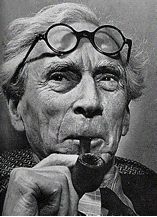

Bertrand Russell
from Freedom versus Organization 1814 - 1914, by Bertrand Russell (1934) W W Norton & Co, Inc.
Born in 1773, of an ancient noble family in the Rhineland, Metternich represented a type intermediate between the eighteenth and nineteenth centuries. His father lost a large part of his estates as a result of the invasion of Germany by French revolutionary armies, and this circumstance did nothing to increase Metternich's love of revolutions. .... Metternich had at no time any sympathy with German nationalism, or indeed with any other nationalism. States were, for him, the personal estates of monarchs, and required no other principle of cohesion. ... (pp. 5, 6)
Above all else, Metternich was an aristocrat-- not of a territorial aristocracy, such as those of England and Russia, but of that type of Court aristocracy that the world owed to Louis XIV. Great affairs were for sovereigns and their ministers, who had no need to consider the interests of the vulgar. The people, for Metternich, scarcely exist, except when he is forced to contemplate with disgust the dirt and raggedness of French revolutionaries. When, later, the populace begins again to be intrusive, his instinct is to tread on it as one would on a black beetle. A very polished gentleman-- almost the last before the democratic deluge. (p. 8)
Meanwhile Alexander employed the period of apparent friendship with France to conquer Finland, which belonged to Sweden. That done, he bought the friendship of Sweden by promising to help the Swedes to acquire Norway, which belonged to Denmark, which was friendly to France. After this, since Napoleon still would not help him to get Moldavia and Wallachia, he felt that the friendship of France served no further purpose. When Napoleon complained that six hundred British ships had sailed up the Gulf of Finland and landed British goods in Russia, Alexander contented himself with a blunt denial. The Grand Army marched to Moscow and perished in the retreat; Europe greeted Alexander as her saviour, and the triumphant Allies marched to Paris. In all this Alexander saw the hand of God, since he could not attribute the victory to himself or his generals. The Prussians saw the victory of moral force against the corruption and atheism of France. The Austrians saw the vindication of ancient right. The English saw the victory of sea power and cheap manufactures. The world in general saw the hope of peace. Such was the situation at the opening of our epoch. (p. 15)
The territorial questions to be decided at the Congress of Vienna were many and complex. It was felt that perhaps it might be a help to have some sort of principle by which the decisions arrived at could be made to seem just. Metternich's colleague, Gentz, who had the reputation of being the hardest worker at the Congress, stated his impressions in a memorandum of February 12, 1815:
Those who at the time of the assembling of the Congress at Vienna had thoroughly understood the nature and objects of the Congress, could hardly have been mistaken about its course, whatever their opinion about its results might be. The grand phrases of "reconstruction of social order," "regeneration of the political system of Europe," 'a lasting peace founded on a just division of strength," &c., &c., were uttered to tranquilize the people, and to give an air of dignity and grandeur to this solemn assembly; but the real purpose of the Congress was to divided amongst the conquerors the spoils taken from the vanquished.
But this could hardly be openly avowed; moreover, on most questions
there were some Powers whose interests were not involved, and
who might therefore be influenced by arguments of principle. In
this situation, it was Talleyrand who discovered the only moral
appeal to which the Congress was not deaf. For this purpose, he
invented the "principle of legitimacy," which governed
Europe until the year of 1830.
The principle of legitimacy asserts, speaking broadly, that territories
ought to belong to their hereditary sovereigns, unless voluntarily
parted with in exchange for some compensation. On this ground,
France, if governed by the Bourbons, had a right to all territory
that was French in the time of Louis XVI. But the principle had
to be carefully stated. It would not do, for example, to suggest
that the English ought to restore the Stuart dynasty. Then there
was Genoa, which had been an independent republic before it was
conquered by France, and which was now to be given to the King
of Sardinia. The Genoese might have invoked the principle of legitimacy,
but unfortunately invoked instead one belonging to a later Congress,
namely the right of self-determination; and what was even worse,
they were in favor of a democratic constitution. This was dangerous......
(pp. 17, 18)
Legitimacy could not, therefore, be invoked by populations against princes. It would be too much to say that the principle could never be invoked by republics .... Roughly speaking, territory was treated as we still treat landed estate: we do not think that the tenants of a landowner can acquire a right to own the land on which they live by merely deciding that they would like to do so...... (p. 18)
"' What Talleyrand calls the "Jacobinism" of
the German patriots led straight on to the Great War, by a movement
which, in retrospect, acquires a perhaps fallacious appearance
of inevitability. At the Congress of Vienna, the German patriots
were ahead of their time; but from 1848 onward their point of
view increasingly dominated the world.
There were in this new doctrine of German nationalism various
distinct elements. There was the purely German element: the belief
in the superior virtue and virility of the German race. There
was the belief that the boundaries of States should be the boundaries
of nations. And there was the democratic belief that populations
should have a right to choose their own form of government. All
these were anathema to the orthodoxy of 1815. (p. 24)
Whatever may be thought of the political ideas associated with the German renaissance of the early nineteenth century, it must be admitted that, as regards the contributions of great individuals to culture, Germany at that time led the world. Kant and Hegel, Goethe and Schiller, are hard to match among their non-German contemporaries. ... Kant admired Rousseau, and liked the French Revolution; he wrote a treatise advocating "the unmanly dream of perpetual peace," as it is called by Treitschke. ... Throughout the whole period from the fall of Napoleon to the Great War, Germany retained its supremacy in science and in almost all forms of learning. Not only in science, but in many other respects also, Germany's outlook in 1815 was more akin to that of the next hundred years than was that of any other country. (pp. 27, 28)
At the same period, as Treitschke also points out, the Inquisition
and the Index were re-introduced by the Pope, and Bible societies
were declared to be the work of the devil, while in Southern France
at the Restoration "the Catholic mob stormed the houses of
the Protestants and murdered the heretics to the cry of 'Let us
make black puddings of Calvin's blood!"'
The statesmen assembled at the Congress of Vienna, while personally
enlightened and civilized, did nothing to discourage such black
reaction, but were terrified by the new ideas in Germany. Metternich,
in particular, set himself to prolong the eighteenth century in
Germany, and succeeded in suppressing all overt liberalism until
1848. (p. 28)
The Congress of Vienna was eighteenth-century in tone, and
German democratic nationalism, where it intruded, seemed to belong
to a later age. Another question that was discussed at Vienna
seems equally out of the picture, namely the slave trade. This
subject, which was the first to rouse nineteenth-century philanthropy,
was brought up by England, and was viewed with complete cynicism
by all the other Powers. ... (p. 28)
The English attitude about the Slave Trade is a
psychological curiosity, since the very men who did most for its
abolition opposed every attempt to mitigate the horrors of English
industrialism. ... (p. 29)
Formally, the Holy Alliance itself had no influence on the course of events, which were regulated by the Congresses of the Great Powers provided for in the Final Act of the Congress of Vienna. But in fact, during the fifteen years of black reaction from 1815 to 1830, popular sentiment did not go astray in regarding all the suppression of liberty that took place as the work of the Holy Alliance. Alexander, as a result of his conversion ceased to be liberal, and consequently fell more and more under the influence of Metternich. Metternich's power in Europe would have been less but for the timely intervention of Madame Krudener. The Tsar, it is true, tired of her before long, but replaced her by other religious mentors who were even more pernicious. There is a similarity between the relation of
Alexander to Madame Krudener and that of Nicholas II to Rasputin. There is also a difference: the one is comedy and the other tragedy. But the comedy ceases when we pass from the person of the Tsar to the world at large. Neapolitan patriots died or suffered life-long imprisonment, Russian soldiers were flogged to death, Greeks were impaled, because Alexander's tender conscience demanded these sacrifices. Before he found salvation he was humane; afterwards, he sank gradually into greater and greater depths of cruelty. (p. 35)
At the time of the Congress of Verona, in 1822, Metternich's power was at its height. Various fortunate circumstances had helped him. First and foremost, the firm support of the Emperor Francis, who was, if anything, even more reactionary than his minister, and objected to education on the ground that "obedient subjects are more desirable than enlightened citizens." ... (p. 43)
What, in the end, defeated him was the growing force of nationalism. The censorship did what it could to prevent even the most indirect encouragement of national feeling. "A band of youthful heroes who flocked around the glorious standard of their country" was altered by the Censor to "a considerable number of young men who voluntarily enlisted themselves for the public service." Metternich forbade Austrian students to study in foreign universities, objected to young men learning history or philosophy or politics, and preferred that Austrian writers should published their books abroad rather than in their own country. In 1834 he harangued a Conference of German Ministers on the evils of Liberalism, speaking of "the misguided attempts of factions to supersede the monarchical principle by the modern idea of the sovereignty of the people," and of the Liberal party as one that "corrupts the youth, deludes even those of riper years, introduces trouble and discord into all the public and private relations of life, deliberately incites the population to cherish a systematic distrust of their rulers, and preaches the destruction and annihilation of all that exists." The assembled Ministers applauded; nevertheless "the distrust of rulers" continued to increase. (pp. 45, 46)
The French Revolution of 1848 gave occasion for the discontents of the whole of the Continent to break loose. Revolts had already begun in Italy even before Louis Philippe had to fly from Paris, but after this event they spread to the whole peninsula, with the exception of the dominions of the King of Sardinia, who was himself a somewhat timid liberal. Throughout Germany the democrats rose; in Hungary Kossuth proclaimed freedom; in Galicia, the Polish aristocrats raised a nationalist revolt, and were quelled only by means of a jacquerie encouraged, or at least tolerated, by the Austrian Government. For a moment, the champions of legitimacy were routed everywhere except in the dominions of the Tsar. (p. 47)
England.
The Whigs and Tories, the two parties into which the aristocracy was divided, had originally been composed, respectively, of the enemies and the friends of the Stuarts, with the result that, after the fall of James 11, the Whigs held almost uninterrupted power for nearly a century. But the Tories crept back into office under the aegis of George III, consolidated their rule by opposition to the French Revolution, and kept the Whigs in opposition until 1830. The division between Whigs and Tories was social as well as political: there were Whig houses where one met Whigs, and Tory houses where one met Tories. As a rule, Whigs married Whigs, and Tories married Tories. While both were equally aristocratic, they differed considerably in their traditions and in their attitude to the rising middle class. (p. 53)
Polite skepticism was common among the Whigs. But their middle-class supporters were mostly earnest nonconformists, and therefore infidel opinions were only to be avowed in conversation: to state them in a form accessible to the lower orders was vulgar. For this reason, Shelley, whose talents would otherwise have made him eligible, was an outcast from the first. For an undergraduate to try to convert the Master of his College to atheism, while it may not have been wicked, was certainly bad form. Moreover, he had abandoned his wife, and what was worse, he had run away with the daughter of that old reprobate Godwin, a Jacobin who had only escaped the just penalty of his crimes by publishing his book at a prohibitive price. And not only was the young lady's father a hoary revolutionary, but her mother had advocated the rights of women, and had lived an openly immoral life in Paris, not for fun merely, but in obedience to a theory. This was beyond a joke. The Whigs remembered that even liberal aristocrats had had their heads cut off by Robespierre. They always knew where to draw the line, and they drew it, emphatically, at Shelley. The prejudice persisted down to my own day, and, I am told, still persists in certain circles. When, at the age of sixteen, I became interested in Shelley, I was informed that Byron could be forgiven because, though he had sinned, he had been led into sin by the unfortunate circumstances of his youth, and had always been haunted by remorse, but that for Shelley's moral character there was nothing to be said, since he acted on principle, and therefore he could not be worth reading. (pp. 595 60)
The life of the rural wage-earners in England in the early nineteenth century presented such an extreme contrast to the prosperity of the gentry that it is difficult to understand the bland complacency of the upper classes. The Continental peasantry, except in France, and in some parts of Germany, were wretched enough, but their misery was of long standing and was, on the whole, in process of amelioration. But in England from 1760 onwards there had been a steady deterioration in the condition of the rural poor, though the change was silent and almost unnoticed. The landless class, which hardly existed on the Continent, was greatly augmented, and supplied the human material essential to the rapid rise of British industrialism. Most historians did not adequately realize the miseries which resulted from the altered position of the rural wage-earner until the publication, in 1911, of The Village Labourer, by J L and Barbara Hammond, a massive and horrifying indictment of upper-class greed. (p. 62)
The instruments of spoliation of the poor by the rich were
various; the two most important were enclosures and the Poor Law.
The history of enclosures, apart from its intrinsic interest,
is important as showing the influence of politics on economic
progress. In the first half of the eighteenth century, the rural
poor enjoyed a state of tolerable comfort. At that time probably
half of the cultivated land in England was worked on the old strip
system, and divided up into holdings of all sizes, from very large
to very small. Most laborers on farms rented strips of land and
cottages which carried with them rights of grazing and firewood
on the commons. In many cases these common rights existed, or
were taken for granted, independently of the holding of a cottage.
Thus the laborer got his firewood free, could keep fowls, a cow,
or a pig on the common, and, if he were thrifty, could save his
wages and lay strip to strip until he became a
well-to-do farmer.
But throughout the eighteenth century and the first half of the
nineteenth, first the open fields and then the waste lands were,
at an increasing speed, enclosed and redistributed by Acts of
Parliament. A few, or sometimes only one of the local landowners
would petition for such an Act, a Bill would be introduced and
a Committee appointed. When the Bill had been passed the land
could be redistributed at the discretion of the appointed commissioners.
The lion's share went to the principal landowner, who was often
either a peer or a Member of Parliament: there was a system of
log-rolling by which a great man could safely leave his interests
in the hands of his friends. The larger farmers would secure a
substantial share, but the smaller farmers and cottagers, as a
rule, obtained nothing, or, if they were given their share, were
unable to take it because of the expense of the necessary fencing.
"The small farmer either emigrated to America or to an industrial
town, or became a day laborer.' The cottager was often reduced
to a state of starvation. This was considered highly satisfactory
by the landlords, who regretted the demoralizing effects on the
laborer of the partial independence which his ancestors had enjoyed
for centuries, considering that it made him lazy, and that, until
he became completely dependent on his employer, he could not be
relied upon to give all his energy to his employer's interest.
Enclosures deprived the laborers, not only of land and valuable
rights, but also of bargaining power in their dealings with farmers
and landlords: they were therefore doubly impoverished, first,
by the loss of sources of livelihood outside their wages, and
second, by a fall of wages. ... (pp. 62, 63)
The second mechanism for depressing the condition of the laborers was one nominally designed for their benefit, namely, the Poor Law. This dated from the time of Queen Elizabeth, and is said (though this seems scarcely credible) to have had philanthropic motives. The Poor Law decreed that every parish was responsible for seeing that none of its poor perished from hunger. If any man, woman, or child became destitute, it was the duty of the parish in which he or she was born to provide a bare maintenance. It was possible, if a man obtained work at a distance from his birthplace, for his new parish to take over the obligation of his support in case of necessity, but this was seldom done. A man was said to have a "settlement" in the parish which was responsible for him. His own parish was unwilling to let him go, since it might become responsible for the expense of bringing him back from the other end of the kingdom. ... It was thus exceedingly difficult for a poor man to move away from his birthplace, however little need it might have for his labor. (p. 64)
An important step in the development of the Poor Law was taken by the inauguration of what is called the 'Speenhamland' system in 1795. At that time fear of revolution was in the air, as the Reign of Terror in France had only just come to an end. The harvest was bad, and there was great distress throughout England, leading to wide-spread food riots, in which women took the chief part. The governing classes became alarmed, and decided that they could not secure their own safety by repression alone. They tried to make the poor eat brown bread and potatoes and drink soup, but the poor, to the surprise of well-meaning persons, refused to depart from the best wheaten bread.
Subsequent experience proved that they were right from an economic point of view: the Irish were persuaded to eat potatoes, with the result that, during the famine of 1845-7, they died in large numbers. Some men, more enlightened than their contemporaries, advocated a minimum wage, and Whitbread brought in a Bill for that purpose in Parliaments but was defeated by the opposition of Pitt. The plan actually accepted, not universally, but throughout the greater part of England, was the system of supplementing a man's wages out of the poor rate, if they seemed insufficient to afford a bare living to himself and his family. A number of Berkshire magistrates assembled at Speenhamland (where the system was first introduced) estimated that a man needed three gallon loaves a week, while a woman or child needed one and a half. If his wages were insufficient to purchase this amount of bread, they were to be supplemented from the poor rate to the necessary extent, which would, of course, fluctuate with the price of broad. (pp. 64, 65)
The natural result of the Speenhamland system was that employers paid low wages in order that part of the expense of the labor employed by them should be borne by the poor rate. ... (p. 65)
From the standpoint of the upper classes, the system had many merits. They felt that what was paid out of the poor rate was charity, and therefore a proof of their benevolence; at the same time, wages were kept at starvation level by a method which just prevented discontent from developing into revolution. In France, revolution had immensely benefited the peasant, whose standard of life was much higher in 1815 than in 1789, in spite of the long wars and final defeat. It was probably the certainty, derived from the old Poor Law, that actual death would be averted by the parish authorities, which induced the rural poor of England to endure their misery patiently. It would have been difficult to devise a cheaper scheme for keeping the poor quiet. ... The poor law impoverished the laborers and sapped their self-respect; it taught them respect for their "betters," while leaving all the wealth that they produced, beyond the absolute minimum required for subsistence in the hands of the landowners and farmers. It was at this period that landowners built the sham Gothic ruins called "follies," where they indulged in romantic sensibility about the past while they filled the present with misery and degradation. (p. 66)
Napoleon had been defeated by the snows of Russia and the children of England. The part played by the snows of Russia was acknowledged, since it could be attributed to Providence; but the part played by the children of England was passed over in silence, since it was shameful to the men of England. It was Michelet, in his history, who first gave it due prominence in the shape of an imaginary conversation between Pitt and the employers: when they complain of his war taxes, he replies "Take the children." But it was a very long time after the end of the war before they let the children go again. (p. 70)
There were two systems of children labor: the older system, of pauper apprentices, and the newer system, of "free' children. The older system was as follows: in London and in various other places, when a man received poor relief, the parish claimed the exclusive right of disposing of his children up to the age of twenty-one. Until 1767, almost all such children died, so that no problem arose for the authorities. In that year, however, a philanthropist named Hanway got an Act passed which caused the children to be boarded out up to the age of six, instead of being kept in the workhouse. The consequence was that large numbers had the misfortune to survive, and the London authorities were faced with the problem of their disposal. The demand for child labor in the Lancashire mills supplied the solution. The children were apprenticed to some mill-owner, and became virtually his property until the age of twenty-one. ... (p. 70)
In the year 1802, Sir Robert Peel ..., who had been himself a far from model employer, introduced and carried through Parliament a Bill "for the better preservation of the Health and Morals of Apprentices and others employed in the cotton and other mills and the cotton and other manufactories." The Bill in fact applied only to apprentices, and only to cotton. ... It prescribed that apprentices were not to work at night, and no more than twelve hours a day; they were to have some education every day, one new suit of clothes a year, and separate rooms for the boys and girls, with a whole bed for each. Every Sunday they were to be taught the Christian religion, and once a year they were to be examined by a clergyman...... (pp. 70, 71)
The employers protested that this Act was going to ruin their business. But it turned out that no one was going to force them to obey the law, and in practice little good resulted. (p. 71)
It was not only in cotton mills that children suffered; they
were subjected to conditions quite as terrible in the coal mines.
There were, for example, the trappers, generally from five to
eight years old, who "sat in a little hole, made at the side
of the door, holding a string in their hand, for twelve hours.
As a rule they were in the dark, but sometimes a good-natured
collier would give them a bit of candle." A girl of eight
according to the Report of the Children's Employment Committee
in 1842, said: "I have to trap without a light, and I'm scared.
I go at four and sometimes at half-past three in the mourning
and come out at five and half-past (in the afternoon). I never
go to sleep. Sometimes I sing when I've a light, but not in the
dark: I dare not sing then.' (pp. 73, 74)
It was by the labor of children under such conditions that Lord
Melbourne acquired the fortune which enabled him to be civilized
and charming. Castlereagh, as Lord Londonderry, was a very important
mine-owner. ... The agony of tortured children is an undertone
to the elegant conversation of Holland House. (p. 74)
Thinking is not one of the natural activities of man; it is a product of disease, like a high temperature in illness. In France before the Revolution, and in England in the early nineteenth century, the disease in the body politic caused certain men to think important thoughts, which developed into the science of political economy. This science, in combination with the philosophy of Bentham and the psychology which James Mill learnt from Hartley, produced the school of Philosophical Radicals, who dominated British politics for fifty years. They were a curious set of men: rather uninteresting, quite without what is called "vision," prudent, rational, arguing carefully from premises which were largely false to conclusions which were in harmony with the interests of the middle class. ... (p. 75)
Adam Smith, the founder of British economics, falls outside of our period, since the Wealth of Nations was published in 1776. ... He did, however, believe, within the boundaries of common sense, that the interests of the individual and of society are, broadly speaking, in harmony, and that enlightened self-interest dictates the same conduct as would be dictated by benevolence. This principle was used later to prove that the self-interest of the manufacturer is in accordance with the true interest of the community, and that the interest of the community must be identical with the true interest of the wage-earner. It followed that when the wage-earner resisted the employer, he was foolish. (pp. 75, 76)
There are, says Malthus, only three ways in which the population can be kept down; they are: moral restraint, vice, and misery. Of moral restraint on a large scale he has little hope until all the population shall have been educated in the true principles of political economy. Of "vice" he cannot, as a clergyman, speak otherwise than in terms of reprobation; moreover, ... he does not expect it, at most times, to be very effective. He proves that the losses caused by epidemics are soon made good, and he concludes that misery is the chief preventive of excessive population. It is because people die of hunger that the population is not greater than it is. (p. 77)
But, it may be said, if there are more people to work the land, it can be made to produce more food. Why then should an increase in numbers cause any one to starve? At this point, the argument depends upon what was afterwards called the law of diminishing returns. ... (p. 77)
Those who form the poorest class in a society must, so Malthus contends, be as poor as is compatible with survival, since otherwise their numbers would increase until that point had been reached. ... It is therefore a good thing that some are richer than others, for, in any system of equality, all would be at the lowest level; on this ground he rejects the schemes of Godwin, Owen, and other reformers. 'It is absolutely certain," he says, 'that the only mode consistent with the laws of morality and religion, of giving to the poor the largest share of the property of the rich, without sinking the whole community in misery, is the exercise on the part of the poor of prudence in marriage, and of economy both before and after it." Malthus thus makes a clean sweep of all schemes of human amelioration which fail to tackle the population problem. ... (p. 78)
Malthus, naturally, objects to the Poor Laws, though he does not think they can be abolished suddenly. It is impossible, he says, to prevent poverty; it would be possible to make the poor rich and the rich poor, but some are bound to be poor so long as the present proportion of food to population continues. If the poor rate were made higher, that would not enable each laborer to have his share of meat: the amount of meat in the country would be the same, and since there is not enough for every one, the price would go up. (p. 78)
There is, he maintains, no right to support: if a man cannot live by his own exertions, or if a child cannot live by the exertions of its parents, the community is under no obligation to provide subsistence. (p. 79)
The advantages to the community which flow from individual selfishness are repeatedly emphasized by Malthus; it is for this reason that a beneficent Providence has made us all such egoists. But the egoism that does good is of a special kind: it is prudent, calculating, and self-restrained, not impulsive or thoughtless. Malthus himself had three children in the first four years of his marriage, and after that no more, owing, on presumes, to "moral restraint." Mrs. Malthus's opinion of the principle of population is not recorded. (pp. 79, 80)
The intellectual influences which formed Bentham's mind were mainly French. Hume, it is true, influenced his philosophy, and Hartley, by the principle of association, influenced his psychology. His ethic first principle, almost in his own words, its to be found in Hutcheson's Inquiry Concerning Moral Good and Evil. The moral evil of a given action, according to Hutcheson, "is as the Degree of Misery, and the Number of Sufferers; so that, the Action is best, which accomplishes the Greatest Happiness for the Greatest Number." But it was the French pre-Revolution philosophers who formed the tone of his mind. He admired Voltaire, and was an enthusiastic follower of Helvetius. ... , What Bacon was to the physical world, Helvetius was to the moral. The moral world has therefore had its Bacon; but its Newton is yet to come." It is not hazardous to surmise that Bentham aspired to be the Newton of the moral world. (pp. 840 85)
So great was his fame in France that the Assembly elected him a French citizen. But he was still a Tory, and soon became disgusted with the Revolution; and at about the same time, the Revolution forgot him. Elsewhere, however, his reputation increased steadily. Alexander's liberal minister Speransky greatly admired him; Alexander, in 1814, asked him to help in drafting a code. In Spain, and throughout Latin America, he was revered. The Cortes voted that his works should be printed at the public expense. ... Aaron Burr, former Vice-President of the United States, invited him to come to Mexico, where the one was to be Emperor and the other was to be legislator. (It does not appear what the Mexicans thought of the scheme.) He thought of going to Caracas, to enjoy the climate and make a penal code for Venezuela. ... (pp. 86, 87)
Bentham, meanwhile, had become involved in the unfortunate project which filled the middle period of his life with bitterness and financial embarrassment. He ... invented a new sort of prison, called a "Panopticon," which was to be in the shape of a star, so that a jailer sitting in the middle could see the door of every cell; nay, by a combined system of mirrors and blinds, the jailer is to see the prisoner while the prisoner cannot see the jailer. He thought the same idea could be applied to factories, hospitals, asylums, and schools. There were those who objected to this plan, except in the case of prisons, in the name of liberty. But Bentham believed happiness to be the goal, not liberty, and he was not convinced that liberty is necessary to happiness. "Call them soldiers, call them monks, call them machines, so they were but happy ones, I should not care. Wars and storms are best to read of, but peace and calms are better to endure." (p. 88)
This is one important difference between associationism and behaviorism. The latter concerns, primarily, what is done by the body; the former concerned what was done by the mind. The associationists were included to deny the existence of matter, but not of mind. ... With the behaviorist, the opposite is the case: he believes in matter, but thinks mind an unnecessary hypothesis. (p. 90)
There is an important respect in which associationism and behaviorism have exactly similar consequences. Both are deterministic .... (p. 90)
The "greatest happiness principle" was the most famous formula of the Benthamite school. ... Why ... Bentham should have attributed this principle specially to Priestley, I do not know. As we have seen, it was stated almost exactly in Bentham's words by Hutcheson at a much earlier date .... Priestley ... was a Unitarian divine, a chemist, and a Radical. He constructed a highly rationalized scheme of theology, he more or less discovered oxygen, and he stood by the French Revolution even in its worst days. On this account, the Birmingham mob wrecked his house, while he, very wisely, fled to America. He was a most praiseworthy citizen, but he had no special claim to be the inventor of the greatest happiness principle. (p. 91)
Between Bentham's ethics and his psychology there was something of a conflict. While a good act is one which furthers the general happiness, it is, according to him, a psychological law that every man pursues his own happiness. Since this is a thing which people cannot help doing, it would be a mere waste of breath to blame them for it; it is, however, the business of the legislator to arrange that a man's private happiness shall be secured by acts that are in the public interest. This is the principle which inspires all Bentham's legal work. (p. 91)
There are, however, according to him, various reasons which make this artificial identification of private and public interests less frequently necessary than might have been supposed. As many previous writers had pointed out, there is sympathy, which makes the spectacle of another man's pain painful. But in addition to this, it will be found (so all the economists of that period contended) that, as a general rule, a man can best further the general interest by pursuing his own. This doctrine, which afforded the theoretical justification of laissez faire, arose, like some other very sober doctrines, out of a Jou d'esprit. Mandeville, in his Fable of the Bees, which appeared in 1723, developed, not too solemnly, his doctrine of private vices, public benefits,' in which he maintained that it is by our selfishness that we promote the good of the community. Economists and moralists have appropriated this doctrine, while explaining that Mandeville should not have spoken of "private vices," since egoism could only be accounted a vice by those who had failed to grasp the true principles of psychology. ... We shall see, later, how Ricardo unwittingly gave it is death blow, and laid the foundations for the opposite doctrine of the class war. (pp. 919 92)
… (Ricardo's) chief work was The Principles of Political Economy and Taxation, published in 1817. This book became, in a sense, the canon of economic orthodoxy; at the same time, it was found that the devil could quote scripture; both Socialists and Single-Taxers derived their proposals from his doctrines. The Socialists appealed to his theory of value, the Single-Taxers to his theory of rent. More generally, by discussing the distribution of wealth among the different classes of society, he incidentally made it clear that different classes may have divergent interests. There is much in Marx that is derived from Ricardo. He has thus a two-fold importance: as the source of official economics, and also as the unintentional parent of heresy. (p. 103)
Ricardo's theory of rent is simple, and in suitable circumstances perfectly valid. ... Some land is more fertile, some less; at any given moment, there must be some land on the margin of cultivation, which is only just worth cultivating. That is to say, it just yields a return to the farmer's capital which is equal to what the same capital would yield if otherwise invested. If the landlord were to demand rent for this land, the farmer would no longer find it worth cultivating; such land, therefore, will yield no rent to the landlord. ... What (the farmer) is willing to pay is the excess of the produce above what is yielded by the same amount of the worst land in cultivation. ... (pp. 103, 104)
In the circumstances of England while the Corn Laws were in force, Ricardo's theory of rent had great practical importance. If it had been possible to import grain, the worst agricultural land in England would have gone out of cultivation. Consequently the difference between the best land and the worst that would have remained in cultivation would have diminished, and rents would have fallen. So much was, of course, obvious to the landowners, who controlled Parliament. (p. 104)
There were, however, further consequences, which were connected with Adam Smith's arguments in favor of free trade. If the importation of grain were to occur as a result of abolishing the import duty, the capital now employed on the worst land would flow into industry, where it would make the exports required to pay for the imported grain. ... This perfectly sound argument naturally appealed to manufacturers, but not to landowners. It was only after the Reform Bill had transferred political power to the middle class that the free-traders could obtain control of Parliament. ... (pp. 104, 105)
... Economic rent is not paid to the landowner in return for any service that he performs; it is paid merely for permission to produce wealth on his land. By the labor of others he is enriched, while he need not lift a finger; his economic function is merely to receive rent, without in any way adding to the national wealth. It is no very difficult inference that the private ownership of land should be abolished, and all rent paid to the State. This inference, however, was not drawn, or even considered, by Ricardo. (p. 105)
Ricardo's theory of value, while less true than his theory of rent, has had even more influence. ... The value of any commodity, he says, is measured by the work involved in making it. (p. 1105)
.. Different manufactured articles made by men who are all paid ;he same rate of wages will have a price proportional to the labor that has gone into them-- ... apart from the cost of the raw material. Ricardo's theory of value, one may say, is approximately true, under conditions of free competition .... (pp. 105, 106)
.. Economists associated with working-class movements, notably Thomas Hodgskin and William Thompson, basing themselves on Ricardo, argued that no one should receive money except in return for labor, and that the laborer had a right to the produce of his own work. These men ... became influential in the Socialist movement connected with Robert Owen. At a later stage, they influenced Marx, who also based his argument on Ricardo's theory of value. At the present day, while Ricardo's influence is much diminished in orthodox economics, it lives on in the economics of the Marxists, who, in this respect as in some others, preserve an outlook belonging to the early nineteenth century. (P. 108)
The views of the Philosophical Radicals fall naturally under three heads, economic, political, and moral, and of these three the economic was, in their case, the most important. (p. 109)
The economics of the school were dominated by Malthus. Until such time as the working classes could be induced to practice moral restraint, the principle of population made it inevitable that the wages of unskilled labor should barely suffice to enable a man to live and rear a family. ... (p. 109)
Politically, the creed of the school contained three main articles: laissez faire, democracy, and education. Laissez faire, as a principle, was invented in France during the ancient regime, but it disappeared during the Revolution .... In the England of 1815, however, the same conditions existed which had produced it in the France of Louis XVI: and energetic and intelligent middle class politically controlled by a stupid government. ... The new men, conscious that they wielded a new power and were creating a new world, asked only to be let alone. (p. 110)
So far, there was much to be said for laissez faire, but it became a dogma and was carried to ridiculous extremes. The Economist, a periodical which represented the views of the Benthamites, even objected to the Public Health Act of 1848 .... "Suffering and evil," the editor wrote, "are nature's admonitions; they cannot be got rid of; and the impatient attempts of benevolence to banish them from the world by legislation, before benevolence has learned their object and their end, have always been productive of more evil than good." ... When, in 1847, the Bill prohibiting children from working more than ten hours a day in cotton factories was passed by both Houses, the Economist's head-line was "The Lords leagued with the Commons to prohibit Industry." ... (p. 111)
Democracy, which was advocated wholeheartedly by James Mill and (in later life) by Bentham, was accepted with some limitations by most of the school. The importance of property had a large place in their minds, and they did not welcome the idea of great numbers of voters who owned nothing. ... Nevertheless, the Benthamites always urged as much extension of the suffrage as was at all within the sphere of practical politics; they were, therefore, quite as effective in furthering democracy as they would have been if their demands had been more extreme. (p. 111)
"All would be gained if the whole population were taught to read." James Mill imagined the working man coming home in the evening and reading Hume or Hartley or Bentham; he did not foresee the literature that would be provided for a population that had learnt to read, but had been taught almost nothing else. (p. 112)
The opposition to popular education at that time was amazingly strong, even in quarters in which it might not have been expected. In the year 1807, a Bill to provide elementary schools throughout England was introduced by Whitbread. It was defeated in the Lords.... 'However specious in theory the project might be ... , of giving education to the labouring classes of the poor, it would in effect be found to be prejudicial to their morals and happiness; it would teach them to despise their lot in life, instead of making them good servants in agriculture and other laborious employments to which their rank in society had destined them, instead of teaching them subordination, it would render them fractious and refractory .... ; it would enable them to read seditious pamphlets, vicious books, and publications against Christianity; it would render them insolent to their superiors .... (p. 113)
There is one other point in Benthamite politics that is important, and that is hostility to imperialism. Bentham, even in his Tory days, saw no use in over-seas possessions. ... He converted his friend Lord Lansdowne, who stated in the House of Lords in 1797: "A greater good could not be done to Spain, than to relieve them from the curse of these settlements [Spanish America], and make them an industrious people like their neighbours. A greater evil could not happen to England than to add them to our already overgrown possessions.' ... (p. 114)
It must also be admitted that there was one respect in which even Bentham was seduced from his austere cosmopolitanism. After James Mill had come to be employed by the East India Company, both he and Bentham felt that a promising field had been opened to experimentation. Bentham hoped to inspire an Indian legal code: HI shall be the dead legislative of British India. Twenty years after I am dead, I shall be a despot." After quoting this remark, Hal6vy adds: "Twenty-eight years after his death the Indian penal code came into force; it had been drawn up by Macaulay under the influence of Bentham's and James Mill's ideas, so that Bentham, who had failed to give a legal code to England, did actually become the posthumous legislator of the vastest of her possessions." (pp. 1140 115)
The virtue which, in practice, they prized above all others, was prudence. For this there were many reasons. One was Malthus: to marry young and have a large family was the cardinal crime, and only prudence could lead men to avoid it. Another was the fact that, for those who had even a little capital, profitable investment was easy, while for those who had none life was very hard. ... (p. 116)
The Utilitarians had another virtue, closely allied to prudence, namely intellectual sobriety. They reasoned carefully on every subject of which they treated; they never imagined that they knew things by the light of nature; they were seldom misled by emotion; and although they were systematic, love of system hardly ever led them into errors which they would not have committed in any case. Much of this intellectual sobriety descends to them from Locke. There is in his Essay on the Human Understanding a chapter headed "Of enthusiasm," which deals with means of preventing it, and is directed against Cromwellian sectaries. Intellectually, though not politically, the Methodists occupied a similar position in the time of the Utilitarians. The Methodists knew all about the next world, which they regarded as more important than our life here on earth. The Benthamites knew nothing of such matters: they were not atheists, but what came to be called agnostics. Where there was no evidence, they suspended judgement-- a practice as admirable as it is rare. (pp. 116, 117)
The Utilitarians were, and still are, made fun of for the supposed habit of judging all things by their usefulness rather than by any quality they may possess on their own account. ... It must be admitted that the temperament of the early Utilitarians gave some color to this accusation, but I think it results much more from the suggestions of the word. "A Utilitarian says, What is the use of a nightingale, unless roasted? The doctrine was that pleasure is the good. If you derived more pleasure from hearing the nightingale than from eating it, you would abstain from roasting it. If you and the nightingale, jointly, would enjoy a greater sum of pleasure if he were left to sing than if he were eaten, the legislator would arrange the laws so that you should not kill the bird. This was the doctrine; and what could any one ask more? (p. 117)
... The reason for the name "Utilitarian' was that Bentham and his disciples would not put up with things that had no use,
merely because they were traditional. It was, therefore, to be judged by the test of utility, and by this it was condemned. (p. 117)
Democracy, in its triumphant and self-confident form, came to the world from the United States, in association with the doctrine of the Rights of Man. In England, the first thoroughgoing democratic movement, that of the Chartists, took its philosophy in the main from America, but it failed, and was succeeded, after an interval, by a new demand for popular representation, led first by Bright, the friend of Cobden, and later by Gladstone, who, during the Parliament of 1841-46, had become Cobden's disciple. The inspiration of this later successful movement was derived from the Philosophical Radicals ... (p. 119)
Although the Reform Bill was passed by strictly constitutional means, it could not have become law without an effective threat of revolution. To make such a threat effective, the middle class had to enlist the support of the working men, and this necessitated raising their hopes. The measure which was actually carried did nothing for working men, but actually deprived them of the vote in the few places, such as Westminster, where they had previously had it. The middle class, while they detested the aristocratic monopoly of political power, had no wish for a system in which their employees would have votes. (pp. 122, 123)
To the working class, the Reform Bill and its consequences was a bitter disenchantment. One of the first measures of the reformed Parliament was the new Poor Law, which introduced the system represented in Oliver Twist. The old Poor Law needed to be changed, and in its ultimate effects the new Poor Law was no doubt less disastrous. But it involved intolerable cruelty and hardship, which its advocates justified on grounds derived from Malthus. The working men had helped the middle class to acquire power, and the new Poor Law was their reward. Working class political consciousness arose out of this betrayal. As Malthus had sprung from the old Poor Law, so Marx and Engels sprang from the new. (p. 123)
The first effect of disenchantment on the wage-earners was the growth of trade-unionism ... which was led by Robert Owen, the founder of Socialism. When this collapsed, the belief in political rather than industrial methods revived, and led, for a while, to the Chartist movement. This movement grew out of the London Working Men's Association, founded in 1836, which advocated a "Charter" consisting of six points: Manhood Suffrage, Annual Parliaments, Vote by Ballot, no Property Qualification, Payment of Members, and Equal Electoral Districts. (p. 123)
Towards Chartism, as towards all movements of political reform, Owen was unsympathetic. "Were you to have," he said, "a Parliament chosen next year by universal suffrage and vote by ballot, it would be most probably the least efficient, most turbulent, and worst possible public assembly that has yet ruled this country." (p. 123)
Although the measures advocated in the Charter were purely political, the ultimate aims of the Chartists were economic. As their historian Gammage (who was one of them) puts it:
The masses look on the enfranchised classes, whom they behold reposing on the couch of opulence, and contrast that opulence with the misery of their own condition. Reasoning from effect to cause there is no marvel that they arrive at the conclusion-- that their exclusion from political power is the cause of our social anomalies.
But to avoid confusing the issue they never, as a body, went beyond the six points, or discussed the economic changes which they would introduce if they had the power. (p. 124)
It was John Bright, himself a middle-class cotton manufacturer ... who was the leader in obtaining the vote for urban working men. He had no personal interest in the extension of the franchise, and was chiefly actuated by dislike of war. he had opposed the Crimean War, and temporarily lost his seat in Parliament as a consequence. He hated Palmerston's swaggering bellicosity, which was popular with the bulk of the middle class, and he believed that the working class would favor a less warlike policy. ... The result was the enfranchisement of urban working men in 1867. Rural laborers, for some reason, were considered more dangerous, and had to wait till they were given the vote by Gladstone in 1885. (pp. 1249 125)
The middle class in Great Britain, having acquired political power in 1832, naturally set to work to alter the laws so as to increase its own wealth. ... But its most important item, the abolition of the duty on corn, was contrary to the interests of agricultural landowners .... When the industrialists spoke of the evils of dear bread, the landowners retorted with the evils of child labor and long hours in factories. In the end, each side was successful in reforming the evils by which the other side profited: Lord Shaftesbury carried his Factory Acts and Cobden carried free trade. ... (p. 126)
... The British industrialists of that time were men of ruthless energy, with the self-confidence that comes of success and new power. Many of them had risen by their own efforts. Following the Philosophical Radicals, they believed in competition as the motive force of progress, and they were impatient of everything that mitigated its intensity. They demanded the abolition of protective duties on the goods that they made as well as on the goods made by others: they felt that, given a free field and no favor, they were sure to win. (p. 126)
Like many reformers, (Cobden) was inspired by common sense. He considered that nations should pursue national wealth, without too much regard to such things as glory and territory. He advocated pacifism, not on any abstract a priori ground, but on the ground that wars and preparations for wars are wasteful considered as investments. His explicit argument for internationalism was that nationalism diminished the wealth of mankind. At the same time, behind his economic facade, he had a kind heart and a good deal of humanitarian sentiment. ... (p. 128)
The opposition between economic common sense and "idealism," in which reached a sharp point in the Crimean War, has gone on ever since, and, unfortunately for mankind, the 'idealists" have, on the whole, won the day. I am not prepared to maintain, as an abstract proposition of ethics, that there is nothing better than material prosperity, but I do maintain, in common with Cobden, that of all political purposes which had had important social effects the pursuit of general material wealth is the best. Nay, more: when well-fed people tell the poor that they ought to have souls above the cravings of the belly, there is something nauseous and hypocritical about the whole performance. ... More important still, there is the nationalist point of view, represented in Cobden's England by Palmerston, and destined to prove stronger than either Cobdenism or Socialism-- at least up to the present time. (p. 130)
... The mediaevalists of the better sort-- among whom I include Coleridge and the Tractarians-- are men who find the modern world so painful that they seek escape from present reality in opium, fairy tales, or the invention of a Golden Age in the past. They are not sinister, but only lacking in the robustness required in order to think useful thoughts. ... As for Carlyle, his idealism is of the old fashioned sort which affords an excuse for the punishment of sinners. The men he admires most are men of blood; his typical hero is Dr. Francia, dictator of Paraguay, in whose praise he can find nothing to say except that he hanged some forty scoundrels without trial. His stern morality is, in fact, only a cloak for his dyspeptic hatred of the human race. His ideals, such as they are, lead to Nietzche, and through him, to the Nazis. As for nationalism, in so far as it is not undisguised greed, it may be defined as the association of a genuine ethical principle with a geographical or racial unit. It is argued-- let us say-- that the purity of family life is a matter of the highest moral import, and that it is best found between such and such parallels of latitude and such and such meridians of longitude. ... (p. 131)
Neither Marx nor Cobden realized the change of psychology produced by the possession of political power, or the means which could be used by the rich to cajole the democracy. A disfranchised class may oppose wars made by its rulers, but when it has gained the vote it feels that wars are its wars, and becomes as bellicose as the former oligarchy. (p. 132)
Unlike most of the politicians of his day, Cobden regarded industry rather than armaments as the source of national power, and accordingly considered America more important than Russia. He says:
It is to the industry, the economy, and peaceful policy of America, and not to the growth of Russia, that our statesmen and politicians, of whatever creed, ought to direct their anxious study; for it is by these, and not by the efforts of barbarian force, that the power and greatness of England are in danger of being superseded: yes, by the successful rivalry of America shall we, in all probability, be placed second in the rank of nations.
To have arrived at this conviction in 1835 showed more sagacity than most people would now realize. Even as late as 18980 the Kaiser still expected Spain to be victorious in the Spanish-American War. ... (pp. 133, 134)
In ... emphasis on the evils of control by ignorant landowners Cobden was wholly justified. There is, however, another side to the question of American railways. The capitalists, being uncontrolled except by corruptible legislatures, acquired enormous areas of public land for nothing, and invented ingenious devices for swindling ordinary shareholders in the interests of directors. A regular technique was developed for transferring wealth first from public ownership to the shareholders in a company, and from them to the directors. By this means economic power came to be concentrated in the hands of a few unprecedentedly rich men. (pp. 134, 135)
Cobden regarded imperialism as folly, and had very just views on India, even during the mutiny, when most English people lost their heads. At the height of the madness on the subject of the mutiny he writes:
Unfortunately for me I can't even co-operate with those who seek, to "reform" India, for I have no faith in the power of England to govern that country at all permanently; and though I should like to see the company abolished-- because that is a screen between the English nation and a full sight of its awful responsibilities-- yet I do not believe in the possibility of the Crown governing India under the control of Parliament. If the House of Commons were to renounce all responsibility for domestic legislation and give itself exclusively to the task of governing one hundred millions of Asiatics, it would fail. Hindostan must be ruled by those who live on that side of the globe. Its people will prefer to be ruled badly-according to our own notions -- by its own colour, kith and kin, than to submit to the humiliation of being better governed by a succession of transient intruders from the Antipodes. (pp. 135, 136)
His attitude to trade unions is frankly expressed in a letter to his brother in 1842. 'Depend upon it," he says, "nothing can be got by fraternizing with Trade Unions. They are founded upon principles of brutal tyranny and monopoly. I would rather live under a Dey of Algiers than a Trades Committee." This view was, no doubt, that of the bulk of employers in his day; moreover, it was in accordance with his general belief in free competition. But it illustrates his incapacity to see labor questions except from the standpoint of the employer. (p. 138)
It was the German economist List who first (in 1841) provided a theoretical defense of protectionism. This was the famous "infant industries" argument. ... But experience has shown that protection ' once granted, cannot be withdrawn even when the infant has grown into a giant. (p. 142)
Another argument, which is not purely economic5 and which has had more influence on governments, is that a nation should, as far as possible, produce all that is needed in time of war. This contention is part of the doctrine of economic nationalism, to which the Manchester School, who were pacifists and anti-imperialists, were bitterly opposed. Economic nationalism proved, in the end, more powerful than the purely commercial outlook of Cobden, but this was only one aspect of the growth of nationalism in general . (p. 142)
The principles of free competition, as advocated by the Manchester School, was one which failed to take account of certain laws of social dynamics. In the first place, competition tends to issue in somebody's victory, with the result that it ceases and is replaced by monopoly. Of this the classic example is afforded by the career of Rockefeller. In the second place, there is a tendency for the competition between individuals to be replaced by competition between groups, since a number of individuals can increase their chances of victory by combination. Of this principle there are two important examples, trade unionism and economic nationalism. Cobden ... objected to trade unions, and yet they were an inevitable result of competition between employers and employed as to the share of the total product which each should secure. ... Both in America and in Germany, it was obvious to industrialists that they could increase their wealth by combining to extract favors from the State; they thus competed as a national group against national groups in other countries. Although this was contrary to the principles of the Manchester School, it was an economically inevitable development. ... (pp. 142, 143)
Darwin's Origin of Species was published in 1859. It may be regarded as the application of Benthamite economics to the animal world. As every one knows, it was through reading Malthus that Darwin was led to the principles of the Struggle for Existence and the Survival of the Fittest. ... (p. 143)
Darwinism, as it appears in the writings of its founder, and still more in those of Herbert Spencer, is the completion of Philosophical Radicalism. But it contained elements which would have shocked Heivetius and James Mill, more especially those elements connected with heredity. ... (p. 143)
It was, of course, easy to adopt Darwinism to nationalism.
The Jews, or the Nordics, or the Ecuadorians, are pronounced to
be the best stock, and it is inferred that everything ought to
be done to make them rich-- although statistics prove that the
rich have fewer descendants than the poor. In this way, also,
Darwinism afforded a transition from the cosmopolitan outlook
of the Philosophical Radicals to the racial bigotry of the Hitlerites.
(p. 144)
And the recognition of war as a means of competition has dissolved
the marriage of competition with pacifism, which was always an
ill-assorted union, since the natural partner of pacifism is co-operation.
(p. 145)
... On the one hand, any large factory is itself an organization, and derives its efficiency from being well organized. In the second place, the productive capacity of a well-equipped factory is so great that, if there is no organization of output, there may be a glut, by which employers will be ruined and men will be thrown out of work. Thus the factory viewed from within suggests the utility of organization, while viewed from without it shows the dangers of unfettered production. It was reflections such as these that caused Robert Owen, after many successful years as a manufacturer, to become the founder of Socialism. (p. 146)
The life of Robert Owen may be divided into four periods. In the first, he is the typical hero of Smile's Self-Help, rising rapidly by his own efforts to a position of wealth and influence. This period ends with his acquisition of New Lanark (mills). In the second period he appears as the benevolent yet shrewd employer, who could matte his factory pay in spite of philanthropic methods which other employers thought sure to lead to ruin. In this period he was still amazingly successful, but what made his success amazing was the combination of business and virtue. This phase of his life begins, in 1815, to give way to the phase of social reform, though he remained associated with New Lanark, more or less loosely, until 1828, or 1829. In his social reform period he was not successful in any immediate sense, though he inaugurated Socialism, the co-operative movement, and working-class free thought. Gradually he passed from being a revered leader of the working-class movement to being the High Priest of a small sect; after about 1835, he ceased to have public importance and became a mere visionary, ending in spiritualism. His early successes and his subsequent failures have the same source: self-confidence. So long as he was attempting things essentially feasible his self-confidence was an asset; when, later, he tried to achieve in a few years changes requiring at least a century, his failure and his self-confidence came into conflict, driving him way from the real world-- further and further away, till he was left with voices out of his own past, where alone his unconscious will had the omnipotence that he unconsciously expected of it in every sphere. Perhaps no man can be a great innovator without more belief in himself than reason can warrant. ... (pp. 151, 152)
It was in 1815 that Owen first came into contact with practical politics, through an attempt to carry a Bill regulating the labor of children in factories. He wished to forbid completely the employment of children under ten in textile factories, and to allow not more than ten and a half hours a day of work for any one under the age of eighteen. ... The Bill was put in charge of the elder Sir Robert Peel, who had carried in 1802 the only Factory Act then in force, that regulating the employment of pauper apprentices in cotton factories. But Sir Robert Peel was himself a manufacturer; he insisted upon consulting the others; the others began to organize opposition, and it became clear that the Bill could only be carried after a long fight, and then with many concessions. (p. 154)
Peel, after introducing a bill on Owen's lines in 1815, allowed it to be postponed, and in 1816 contented himself with a committee of inquiry. Before this committee employers gave evidence of the beneficial effect of long hours on children's moral character. Fourteen hours a day spent in the mill made them obedient, industrious, and punctual; for their own sakes, nothing should be done to shorten their hours. Besides, it would be impossible to face foreign competition if the legislature interfered .... (pp. 154, 155)
Nothing was done in 1817, because Peel was ill. In 1818, however, he re-introduced his Bill, somewhat modified in the hope of diminishing the employer's opposition; it passed the Commons, but was defeated in the Lords. Their Lordships succeeded in finding a number of medical men willing to swear that nothing is so good for the health of children as fifteen hours a day in -factories. "One well-known doctor even refused to commit himself to the statement that a child's health would be injured by standing for twenty-three out of the twenty-four hours.' (p. 155)
Owen, meanwhile, had embarked upon his first great scheme for regenerating the world. Considering that Socialism sprang from this scheme, it is amazing to find the extent to which, at first, Owen was favored by the great. ... Bit by bit, as his honesty got the better of his tact, his fine friends fell away from him, but at first all the world was predisposed to his favor. (p. 155)
Owen's original proposals were made to a Select Committee in 1817, which was inquiring into the Poor Law. The Peace had brought wide-spread unemployment; as Owen said, "on the day on which peace was signed the great customer of the producers died." But apart from his temporary cause, machinery was more and more displacing human labor. There was an optimistic doctrine that the cheapness of machine made goods so stimulated demand that as much labor could be employed as in the days of handicrafts. In so far as there was truth in this belief, it depended upon a continually expanding foreign market. ... In any case, as every one knows now, foreign markets cannot expand indefinitely. Owen was the first man who fully realized the problems raised by the productive power of machines. ... (p. 156)
"The working classes," he concludes, "have now no adequate means of contending with mechanical power." Since machinery cannot be discontinued, either millions must starve or "advantageous occupation must be found for the poor and unemployed working classes, to whose labour mechanism must be rendered subservient, instead of being applied, as at present, to supersede it." (p. 157)
This was, I think, the first time that any one had perceived our modern problem. To rail at machinery is useless, and yet, if the matter is left to the free play of the old economic forces, a mechanized world is one in which labor is impoverished and enslaved. This evil can only be prevented by deliberate planning, not by a policy of laissez faire. ... (p. 157)
Owen's cure was not so perspicacious as his analysis of the evil. At first, since he was presenting his Plan to a body which was inquiring into the Poor Law, he presented it mainly as a method of dealing with pauperism. His scheme was to collect the unemployed into villages, where they should co-operate in cultivating the soil, and also in manufacturing, though the bulk of their work should usually be agricultural. They were all to live in one large group of buildings, containing public reading rooms and a common kitchen, all meals being taken in common. All children over three years old were to live in a separate boarding house, and there was to be adequate provision for their education from the earliest age. All were to live in harmony and produce in common. The latest results of chemistry were to be utilized in making the agriculture scientific, but, like Kropotkin at a later date, Owen believed in intensive cultivation. On quite inadequate grounds he preferred the spade to the plough. While his factories were to be up-to-date and this manuring scientific, the actual tilling of the soil was to remain primitive. (p. 157)
Owen's Plan astonished and amused his contemporaries. ... As a matter of fact, apart from all other difficulties, the financial obstacles were insuperable. He himself estimated the cost of starting an establishment for 1,200 men, women, and children at 96,000 pounds. True, once started it was to be self-supporting and to pay interest on the capital invested. But who was going to regenerate mankind at a cost of 80 pounds per head? The thing might be tried experimentally on a small scale, but as a cure for the ills of the nation it was clearly out of the question. (pp. 157, 158)
Owen did not fail for lack of skill in securing the right kind of publicity. He formed a committee containing most of the important personages; he received encouragement from the Government; and he induced The Times and other leading newspapers to write in his praise and to insert articles by him. Whenever they did so, he purchased 30,000 copies for distribution-- which may possibly have influenced them in his favor. (p. 158)
He did not claim originality for his Plan. He himself maintained that priority belonged to a writer named John Bellers, who published, in 1696, a pamphlet called Proposals for Raising a College of Industry of all Useful Trades and Husbandry, etc. It is probable that he also owed something to a community of Rappites in Pennsylvania. His enemies said that his ideas were much the same as those of Thomas Spence, who held that the land belonged to the people, and ought not to be left in private ownership. Thomas Spence, whether or not his ideas contributed to Owen's, is a man who deserves to be remembered. He was born in 1750, and died in 1814; from the year 1775 onwards, he continued to advocate the nationalization of the land, first in Newcastle, and then as a bookseller in Chancery Lane. he was led to his opinions by an incident which occurred in Newcastle in 1775. The Corporation enclosed and let part of the Town Moor, but the freemen brought an action claiming the rent, and won. He published a book with the attractive title Pig's Meat, or Lessons for the Swinish Multitude. His first paper, which he read to the Newcastle Philosophical Society, was called "On the mode of administering the landed estates of the Nation as a Joint Stock property in Parochial Partnership by dividing the rent." He was frequently in prison, and so were his followers, who called themselves "Spencean philanthropists." The Government accused them of plots, and suspended Habeas Corpus on account of them. ... (pp. 158, 159)
He had expounded his Plan at a public meeting on August 14, 1817, with complete confidence that it would soon be adopted throughout the whole world. He had much support, but there were some who rejected his scheme from the first. There were Radicals, including Cobbett, who regarded it as "nothing short of a species of monkery." Malthus objected to his scheme on grounds of population, though Ricardo was on the whole favorable. The poet Southey nosed out the insufficiency of religion in Owen's method of regenerating the world. As regards this last accusation, Owen decided that it would not be honest to keep silent. At a second meeting, on August 21st, he delivered a carefully prepared address, in the course of which he stated, with all possible emphasis, not only that he himself was not a Christian, but further that he regarded religion as the chief source of all human ills .... (p. 159)
After this, naturally, Owen was dropped by the Archbishop and Bishops, the Dukes and Cabinet Ministers, The Times and the Morning Post. . . . (pp. 159, 160)
Owen gradually became aware that the Government would not take up his Plan, but he still had hopes of the local authorities. In 1820, he presented a long Report to the County of Lanark, explaining his ideas in considerable detail. The most important novelty in this Report is his proposal that Labor Notes should take the place of money. ... According to Owen's proposal, all prices would be fixed in proportion to the labor involved in production, and all payments would be in labor units. ... To the adoption of this system he attributed almost to magical powers. ... As he grew older, his sense of reality grew less, and the apocalyptic strain in his character became more and more prominent. (pp. 160, 161)
There is, however, a great deal that is true and important in the Report to the County of Lanark. It begins by stating that labor is the source of all wealth, and it argues that there is no difficulty in producing enough, but only in finding a market. The markets are created by working-class demand, which depends upon wages; therefore to improve markets it is only necessary to raise wages. "But the existing arrangements of Society will not permit the labourer to be renumerated for his industry, and in consequence all markets fail." After expounding his labor-currency and his villages, he goes on to argue against excessive division of labor. Children are to have an all-round training, and adults are to combine agriculture with industrial work. Education, as always with Owen, is treated as the basis of all the rest. But the consequences aimed at are far-reaching. All will have enough, and therefore there will be no more wars, no more crimes, no more prisons; instead, there will be universal happiness. (p. 161)
The four years 1824 to 1828 were largely occupied in an experimental community on the lines of the co-operative parallelograms. George Rapps a German religious reformer, had conducted to America a number of earnest Rappites, who founded a colony called Harmony, first in Pennsylvania, and later in Indiana. They renounced marriage and tobacco, with the result that they became prosperous. In 1824 they decided to move again, and early in 1825 they sold all that they owned in Indiana to Owen, who called the place New Harmony, and proceeded, after addressing the President and Congress in Washington, to organize such a community as he had dreamed of. Everything went wrong, as it generally does in such experiments. Owen lost 40,000 pounds, and emerged a poor man. His sons, however, who came to New Harmony with him, retained some of the land, and in the end became successful American citizens. (p. 161)
Oddly enough, there was just one respect in which New Harmony achieved success, and that an entirely surprising one. Owen imported from Europe a number of men of science, many of whom did valuable work. His own sons were in charge of the United States Geological Survey, the headquarters of which was at New Harmony till 1856. ... (pp. 161 162)
... In 1835, he added to his unpopularity by proclaiming unorthodox views of marriage in a series of lectures published under the title Lectures on the Marriages of the Priesthood of the Old Immoral World. ... Owen was by this time a complete Communist, and he objected to marriage as an institution connected with private property, and involving something like property in persons. He denounced not only marriage but the family environment for children, and that in very violent language. But he seems to have hoped that, in spite of liberty, there would still be many life-long unions. (p. 162)
His enemies, though they denounce his doctrines, found nothing to say against his private life. Parallelograms, nursery schools, abolition of private property, and abolition of marriage form a logically consistent body of doctrine, and there is no reason to look for any other source of his views of morals. (p. 163)
The episcopal oratory was vigorously followed up by lesser men throughout the country, with the result that Owenites were mobbed in the name of Christian charity. But nothing very drastic occurred, and the sect gradually sank into obscurity. How firmly the association of Socialism with free love became established in the minds of the well-to-do is shown in the answers of a clerical witness in 1846 before a Parliamentary Committee on railway construction. In connection with the morals of the navvies employed on the work, this clergyman was asked:
"You speak of infidel opinions. Do you believe that many
of them are Socialists?"
"Most of them in practice," he replied. "Though
they appear to have wives, very few of them are married."
The Victorian delicacy of this answer is to be applauded, but there is no likelihood that the navvies were Socialists in any other sense. The Socialists of that period were few, earnest, and intellectual; the navvies were none of these. (p. 164)
... In his attempts to transform the world he failed through impatience, through failure to pay due attention to finance, and through the belief that everybody could easily and quickly be persuaded to see what appeared to him self-evident truth. His success at New Lanark misled him, as, at first, it misled others. He understood machines, and he knew how to make himself liked; these qualities sufficed at New Lanark, but not in his later ventures. He had not the qualities that make either a successful leader or a successful organizer. (pp. 164, 165)
Owen's villages, considered as a solution, were of course a trifle absurd. A communistic system cannot be adequately tried on a small scale; it must be extended at least over a whole nation, if not over the whole world. ... No small community, now-a-days, can aim at being economically self-contained, unless it is prepared to accept a very low standard of life. (p. 166)
In other respects, however, there is still a very great deal to be said for Owen's parallelograms. Unlike his contemporaries, he did not think of life in terms of profit and loss; he remembered beauty, the cultivation of the senses and the intellect, and, above all, children. In a communal life such as he planned, it is possible to have all the beauty of the Oxford and Cambridge Colleges; it is possible to have space, fine public rooms, freedom for children's work and play. All these things the family individualism to which we are accustomed makes impossible. It is only by combination that men who are not richer than any one should be can escape from squalor and enjoy the esthetic delights belonging to spacious architecture and an abundance of air and sunshine. ... He thought the transformation to the new society an easier and swifter matter than was possible, but the things he desired were good, they were neglected by almost all other reformers, and, with some technical adjustments, they were such as the growth of machine production has made more practicable, not less. For these reasons, in spite of his limitations, he is important, and his ideas are still capable of bearing fruit. (pp. 166, 167)
The earliest trade unions, according to Mr and Mrs Sidney Webb, date from the late seventeenth century, and thus began a hundred years before the era of machine production, but it was only at the time of the Industrial Revolution that trade unionism began to be important. "In all cases in which Trade Unions arose, the great bulk of the workers had ceased to be independent producers, themselves controlling the processes, and owning the materials and the products of their labour, and had passed into the condition of lifelong wage-earners, possessing neither the instruments of production nor the commodity in its finished state." ... (pp. 168, 169)
So long as the labor unions were free from middle-class influences, they had no large aims, either political or economic, nor had they much sense of working-class solidarity. They consisted of local combinations, mostly of skilled craftsmen in some particular craft, sometimes co-operating with similar combinations elsewhere, but seldom concerned with, anything beyond the maintenance of their own rate of wages. Some of their leaders, however, after having come into contact with Philosophical Radicalism in connection with the repeal of the Combinations Laws, became aware of the existence of another doctrine, which offered more to wage-earners than the cold comfort of Maithusian self-restraint and economy with a view to emigration. Socialism was being preached, not only by Owen, but by several economists, of whom the most important was Thomas Hodgskin, a man who enjoys the rare distinction of being quoted with respect by Marx. Hodgskin taught, following Ricardo, that labor is the source of value, and, not following Ricardo, that labor should receive the whole produce of industry. The result of his activities terrified James Mill, who on October 25, 1831, wrote in great anxiety to Place about a deputation "from the working classes" who had been preaching Communism to Mr Black, the editor of the Morning Chronicle. (p. 170)
The result of Socialist teaching was a revolt against middle-class Radicalism and the rapid growth of a purely working-class movement, partly trade unionist and partly cooperative, which, to a great extent, looked upon Owen as its prophet. While he was busy with New Harmony, the co-operative movement began, in close connection with Owen's doctrines. ... As the capital required for founding villages was not forthcoming, the co-operative movement was led to develop in more practical ways. The present immense growth of co-operative stores is the outcome of a development which starts from Owen; but before reaching its ultimate highly practical form it went through various vicissitudes and tried a number of unsuccessful experiments. (pp. 171, 172)
The affairs of the Consolidated Union were now in a bad way, and Owen's quarrels with his lieutenants, primarily about religion, completed the collapse. ... Amid personal and financial troubles, the Grand National Consolidated Trades Union came to a painful end. Owen, abandoning his hopes of it, persuaded such of his followers as remained faithful to follow him into a new organization, The British and Foreign Consolidated Association of Industry, Humanity, and Knowledge, and trade unionism, for a time, passed into obscurity. i4orking-class fervor was diverted first into purely political channels by the Chartists, and then, after the foundation of the Rochdale Pioneers in 1844, into the second co-operative movement, which still looked to Owen as a prophet, but pursued more practicable means towards a less revolutionary end. ... (pp. 173, 174)
Trade revived, and Socialism decayed. Now trade has again decayed and Socialism has again revived. Perhaps this is not the last turn of the cycle, but the last turn must come. (p. 175)
Socialism, unlike the creed of the Philosophical Radicals, did not quickly become a powerful force in practical politics, but remained, broadly speaking, the ineffective creed of a minority until 1917. As a system of thought, however, it belongs to the same period as Ricardo and James Mill. After the failure of Robert Owen, the Socialist movement, for a time, became mainly French, and was adapted to pre-industrial conditions. The doctrines of Saint Simon and Fourier had considerable influence, and the Socialists were sufficiently powerful to dominate the beginnings of the Revolution of 1848. French Socialism of that period, however, had still some of the defects of Owenism, as well as others peculiar to itself. It had not a consistent body of doctrine, or a practicable scheme for the transition from capitalistic to socialized production. (p. 176)
It was only with Marx and Engels that Socialism reached intellectual maturity, and became capable of inspiring a serious political party. The Communist Manifesto, which already contained all the essentials of their doctrine, was published just before the outbreak, of the French Revolution of 1848. Mentally, it is to this period that Marx's system belongs. (p. 176)
Marx was born in 1818, at Treves in the Rhineland, where French influence had penetrated more deeply than in most parts of Germany. His ancestors, for generations, had been rabbis, but his father was a lawyer. On the death of the father's mother, which occurred when Marx was six years old, the family became Christian, and Marx was educated as a Protestant. ... (p. 177)
... English Socialism, under the leadership of Robert Owen, had become mainly secularist and anti-Christian. Owen, as we have seen, had always been opposed to political methods, and Radical politics in England was left to the Chartists, whose programme did not directly concern itself with economic questions. In France, on the contrary, the movement inaugurated by Saint Simon and Fourier had continued and was full of vigor. Marx made the acquaintance of the leaders, of whom the most important were Proudhon and Louis Blanc. He learnt what there was to know about Socialism, but did not make friends with any of the French Socialists. It must be said that Socialism before Marx was not worthy of any great degree of intellectual respect. Saint Simon was essentially a mediaevalist who disliked industrialism and the modern world, and sought renovation in a purified Christianity. Fourier, though he had merit as a critic of the existing economic system, became completely fantastic when he advanced schemes for a better organization of production. ... In France, such men had succeeded in creating a labor movement neither purely political, like the Chartists, nor purely economic, like the trade unions, but both at once. It was realized that political means, such as manhood suffrage, were necessary, but they were to be used for the achievement of economic objects of importance to the proletariat. This conception of the relation of politics to economics Marx learnt in France and retained through life. (pp. 178, 179)
The belief in an intimate relation between philosophy and politics, which Marx, in common with all his circle, accepted as axiomatic in his student years, remained part of his creed. 'Philosophy," he says at this time, "cannot be realized without the uprising of the proletariat; and the proletariat cannot rise without the realization of philosophy.' To English-speaking people, who do not take philosophy seriously, this must seem an odd sentiment, unless they have learnt to accept the Communist creed. To Marx at that rate, it would seem, the realization of philosophy was as important as the rising of the proletariat. He was, in fact, well on the way towards the theory that all philosophy is an expression of economic circumstances. (p. 179)
... Engels was two years younger than Marx, and had been subjected to the same intellectual influences in his university years. But his father was a cotton spinner with factories both in Germany and in Manchester, and Engels had been sent to Manchester to work in the family business. This had given him first hand knowledge of up-to-date industrialism, and of English factory conditions at a very bad period. ... Marx had been, until he met Engels, too academic. ... (p. 179)
Scarcely was the Manifesto finished when the Revolution broke out in Paris. The Provisional Government, which was largely Socialist, invited Marx to Paris, and he went. But he stayed there only a month: at the end of that time, the Revolution having spread to Germany, he naturally wished to be active in his own country. (p. 181)
Few movements in history have disappointed all participants more completely than the revolutions of 1848. For milder revolutionaries, the disappointment was only temporary, but for Marx it was life-long. (pp. 181, 182)
He was expelled from Prussia in May, 1949, and never received permission to return, though in fact he returned a few times surreptitiously for brief periods. ... From Germany he went to Paris from which he was expelled after a month. The only remaining refuge was England, the "Mother of the Exiles," as it was then called. In England, with brief intervals, he lived for the rest of his life, no longer attempting to stir up revolution in his own day, but providing the mental stimulus to revolution at some indefinite future date. (p. 182)
So far as private circumstances went, his life was like Mr Micawber's, an affair of duns, pawnbrokers, disputes about dishonored bills, and so on. ... (p. 182)
Friendship between these two men could not, however, be of long duration. Bakunin was the apostle of Anarchist Communism, and Marx was of political Communism; Marx hated Slavs, Bakunin hated Jews. ... So far as Bakunin is concerned, the personal reasons would not have sufficed to produce an estrangement. After reading Capital he wrote. "For five and twenty years Marx has served the cause of socialism ably, energetically, and loyally, taking the lead of everyone in this matter. I should never forgive myself if, out of personal motives, I were to destroy or diminish Marx's beneficial influence. Still, I may be involved in a struggle against him, not because he has wounded me personally, but because of the State socialism he advocates." (p. 186)
Bakunin joined the International in 1868, and set to work to bring it over to his views. He and Marx fought a fierce fight, in which Marx and his followers proved themselves far from scrupulous. The spy accusation was revived; Bakunin was said to have embezzled 25,000 francs. At the Congress at the Hague, in 1872, where Marx had a majority, it was decided to expel Bakunin on the grounds that he had "resorted to fraudulent maneuvers in order to possess himself of other people's property." But it was a barren victory. By the next year, the International was dead. (p. 186)
Both sections, Socialists and Anarchists, survived the end of the International, but while the Socialist movement prospered, the Anarchists remained always politically insignificant. In Russia, Bakunin had a successor in many ways superior to himself, namely Kropotkin, who lived to see the Marxists gain control of the Russian State. Elsewhere, except in Spain, Bakunin's following died out. Whatever may be thought of Marx's methods, there can be no doubt that his programme was more practicable than his rivals, and based upon a sounder estimate of human nature. (p. 187)
Marx was the first intellectually eminent economist to consider the facts of economics from the standpoint of the proletariat. The orthodox economists believed that they were creating an impersonal science, as free from bias as mathematics; Marx, however, had no difficulty in proving that their capitalist bias led them into frequent errors and inconsistencies. ... (p. 187)
Let us, in the first place, endeavor to be clear as to what the theory of dialectical materialism is. ... Metaphysically it is materialistic: in method it adopts a form of dialectic suggested by Hegel, but differing from his in many important respects. It takes over from Hegel an outlook which is evolutionary, and in which the stages of evolution can be characterized in clear logical terms. These changes are of the nature of development, not so much in an ethical as in a logical sense-- that is to say, they proceed according to a plan which a man of sufficient intellect could, theoretically, foretell, and which Marx himself professes to have foretold, in its main outlines, up to the moment of the universal establishment of Communism. The materialism of its metaphysics is translated, where human affairs are concerned, into the doctrine that the prime cause of all social phenomena is the method of production and exchange prevailing at any given period. ... (p. 188)
" ... the economic structure of society always furnishes
the real basis, starting from which we can alone work out the
ultimate explanation of the whole superstructure of juridical
and political institutions as well as of the religious, philosophical,
and other ideas of a given historical period.' (pp. i88, 189)
The discovery of this principle, according to Marx and Engels,
showed that the coming of Socialism was inevitable.
From that time forward Socialism was no longer an accidental discovery
of this or that ingenious brain, but the necessary outcome of
the struggle between two historically developed classes-- the
proletariat and the bourgeoisie. Its task was no longer to manufacture
a system of society as perfect as possible, but to examine the
historico-economic succession of events from which these classes
and their antagonism had of necessity sprung, and to discover
in the economic conditions thus created the means of ending the
conflict. ... The Socialism of earlier days certainly criticized
the existing capitalistic mode of production and its consequences.
But it could not explain them, and, therefore, could not get the
mastery of them. It could only simply reject them as bad. The
more strongly this earlier Socialism denounced the exploitation
of the working-class, inevitable under Capitalism, the less able
was it clearly to show in what the exploitation consisted and
how it arose." (p. 189)
... Engel says: "The materialistic conception of history starts from the proposition that the production of the means to support human life and, next to production, the exchange of things produced, is the basis of all social structure; that in every society that has appeared in history, the manner in which wealth is distributed and society divided into classes or orders, is dependent upon what is produced, how it is produced, and how the products are exchanged. From this point of view the final causes of all social changes and political revolutions are to be sought ... , not in the philosophy, but in the economics of each particular epoch. ... From this it also follows that the means of getting rid of the incongruities that have been brought to light, must also be present, in a more or less developed condition within the changed modes of production themselves. These means are not to be invented by deduction from fundamental principles, but are to be discovered in the stubborn facts of the existing system of production. " (pp. 1899 190)
... Before going on to economics one is inclined to ask, first, whether materialism is true in philosophy, and second, whether the elements of Hegelian dialectic which are embedded in the Marxist theory of development can be justified apart from a full-fledged Hegelianism. Then comes the further question whether these metaphysical doctrines have any relevance to the historical thesis as regards economic development, and last of all comes the examination of this historical thesis itself. To state in advance what I shall be trying to prove. I hold (1) that materialism, in some sense, may be true, though it cannot be known to be so; (2) that the elements of dialectic which Marx took over from Hegel made him regard history as a more rational process than it has in fact been ... ;(3) that the whole of his theory of economic development may perfectly well be true if his metaphysic is false, and false if his metaphysic is true ... ;(4) with regard to the economic interpretation of history, it seems to me very largely true, and a most important contribution to sociology; I cannot, however, regard it as wholly true, or feel any confidence that all great historical changes can be viewed as developments. (pp. 190, 191)
(1) Materialism. Marx's materialism was of a peculiar kind, by no means identical with that of the eighteenth century. When he speaks of the 'materialistic conception of history," he never emphasizes philosophical materialism, but only the economic causation of social phenomena. ... (p. 191)
'The question whether objective truth belongs to human thinking is not a question of theory, but a practical question. The truth, i.e. the reality and power, of thought must be demonstrated in practice.
"The standpoint of the old materialism is 'bourgeois' society; the standpoint of the new is human society or socialized (vergesell-schaftete) humanity. 'Philosophers have only interpreted the world in various ways, but the real task is to alter it." (p. 192)
The philosophy advocated in the earlier part of these theses is that which has since become familiar to the philosophical world through the writings of Dr Dewey, under the name of pragmatism or instrumentalism. Whether Dr Dewey is aware of having been anticipated by Marx, I do not know .... (p. 1?2)
The conception of 'matter," in old-fashioned materialism, was bound up with the conception of "sensation." Matter was regarded as the cause of sensation, and originally also as its object, at least in the case of sight and touch. Sensation was regarded as something in which a man is passive, and merely receives impressions from the outer world. This conception of sensation as passive is, however,-- so the instrumentalists contend-- an unreal abstraction, to which nothing actual corresponds. ... A cat seeing a mouse is by no means a passive recipient of purely contemplative impressions. And as a cat with a mouse, so is a textile manufacturer with a bale of cotton. The machinery by which it is to be transformed is explicitly, and obviously a product of human activity. Roughly speaking, all matter, according to Marx, is to be thought of as we naturally think of machinery: it has a raw material giving opportunity for action, but in its completed form it is a human product. (p. 192)
... In place of knowing an object in the sense of passively receiving an impression of it, we can only know it in the sense of being able to act upon it successfully. That is why the test of all truth is practical. And since we change the object when we act upon it, truth ceases to be static, and becomes something which is continually changing and developing. That is why Marx calls his materialism "dialectical," because it contains within itself, like Hegel-s dialectic, an essential principle of progressive change. (pp. 192, 193)